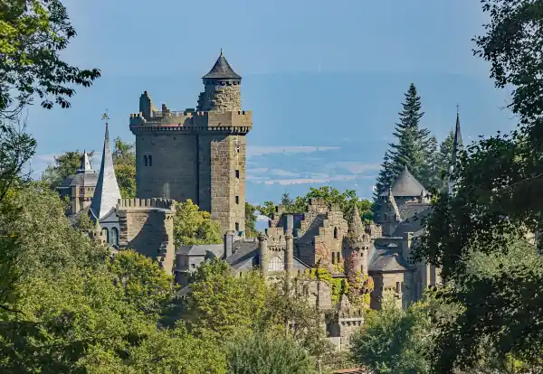
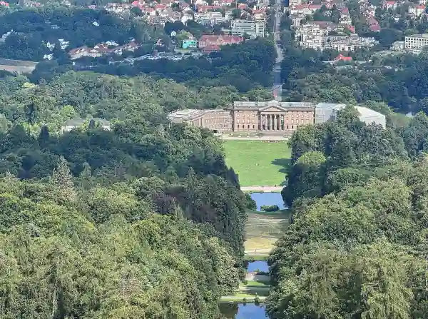
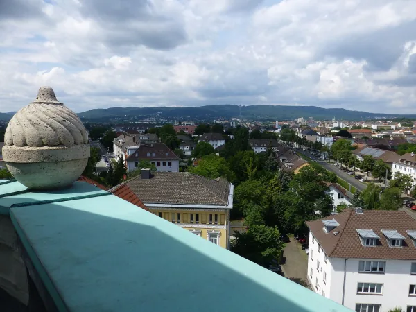
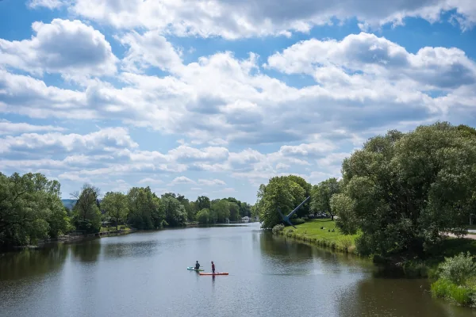

Kassel, wie wir es kennen
Kassel ist grüner, als viele denken: Oben wacht der Herkules über den Bergpark, an Wasserspieltagen rauscht das Wasser die Kaskaden hinab, und 2027 wird die ganze Stadt wieder zur Bühne der documenta. Hier steht, wann was läuft, wo du parkst und was sich wirklich lohnt.

Wenn um 15.45 Uhr die Große Fontäne hochgeht und alle, die sich zu nah ans Wasser gestellt haben, plötzlich nass werden.
AaronWas hast du vor?

Herkules, Kaskaden, Löwenburg: Kassels großer Park am Berg.

Märchen, Museen und Ideen, wenn das Wetter nicht mitspielt.

Welcher Stadtteil passt zu dir, und wie du zwei Tage füllst.
Weihnachtsmarkt Kassel 2026
Bald leuchtet die Innenstadt: Märchen, Lichter und Glühwein.
Alles dazu lesenAlle Ratgeber

Beleuchtete Wasserspiele Kassel
Beleuchtete Wasserspiele Kassel: die Termine 2026 als Beispiel, Ablauf am Abend mit Uhrzeiten, Anreise mit Bus und Bahn und was anders ist als tagsüber.
WeiterlesenBergpark Wilhelmshöhe Kassel
Bergpark Wilhelmshöhe in Kassel: was dich im UNESCO-Welterbe erwartet, Eintritt (Park frei), ein Rundweg bergab für einen Tag und die Anreise.
Weiterlesendocumenta 2027 in Kassel
documenta 16 in Kassel: 12. Juni bis 19. September 2027, täglich 10 bis 20 Uhr. Ticketpreise, Bus und Bahn, Welcome Center und Anreise im Überblick.
Weiterlesen
Unterkunft zur documenta 2027
Übernachten zur documenta 2027 in Kassel: Innenstadt, Vorderer Westen, Bad Wilhelmshöhe, Bahnhof Wilhelmshöhe und Kirchditmold im Vergleich, mit Tram-Anbindung.
Weiterlesen
Grimmwelt Kassel
Grimmwelt Kassel: Öffnungszeiten, Eintritt für Erwachsene, Kinder und Familien, was die Ausstellung zeigt, Dachterrasse und Anreise mit Tram und Auto.
Weiterlesen
Herkules Kassel
Herkules Kassel: Was das Monument ist, wann Oktogon und Plattform offen sind, was der Eintritt kostet und wie du mit Bus oder Auto hinaufkommst.
Weiterlesen
Kassel bei Regen
Kassel bei Regen: Schloss Wilhelmshöhe, Grimmwelt, Naturkundemuseum, Landesmuseum, Planetarium und Kurhessen-Therme mit Öffnungszeiten und Preisen.
Weiterlesen
Kassel Geheimtipps
Weniger bekannte Orte in Kassel: Künstler-Nekropole, Sepulkralmuseum, Weinbergbunker, Turm des Landesmuseums, Laserscape und Dönche mit Zeiten und Preisen.
WeiterlesenKassel mit Kindern
Kassel mit Kindern: Bergpark und Löwenburg, Grimmwelt, Naturkundemuseum, Planetarium und Karlsaue mit Öffnungszeiten und Kinderpreisen im Überblick.
Weiterlesen
Kassel Sehenswürdigkeiten
Kassel Sehenswürdigkeiten im Überblick: Bergpark mit Herkules und Schloss, Innenstadt mit Fridericianum, Karlsaue und Grimmwelt, mit Eintritt und Zeiten.
Weiterlesen
Kassel am Wochenende
Kassel am Wochenende: Samstag Innenstadt mit Markthalle, Fridericianum und Grimmwelt, Sonntag Bergpark mit Herkules und Schloss, mit Wegen und Zeiten.
WeiterlesenLöwenburg Kassel
Löwenburg Kassel: Öffnungszeiten im Sommer und Winter, warum du nur mit Führung hineinkommst, was Tickets kosten und wo du parkst.
Weiterlesen
Orangerie Kassel und Karlsaue
Orangerie Kassel in der Karlsaue: Park frei zugänglich, Planetarium Do bis So 10 bis 17 Uhr für 8 Euro, Marmorbad April bis Oktober gratis. Anreise.
Weiterlesen
Wilhelmshöhe Parkplatz
Parken am Bergpark Wilhelmshöhe: die Parkplätze am Herkules und am Schloss, Preise an normalen Tagen und Wasserspieltagen, dazu Bus und Tram.
Weiterlesen
Schloss Wilhelmshöhe
Schloss Wilhelmshöhe in Kassel: welche Sammlungen du siehst, wann das Museum offen ist, was das Tagesticket kostet und wie du mit der Tram 1 hinkommst.
WeiterlesenKassel übernachten
Übernachten in Kassel: welche Stadtteile zu deinem Plan passen, warum der Bahnhof Wilhelmshöhe zählt und was die Übernachtungssteuer ausmacht.
Weiterlesen
Wasserspiele Kassel
Wasserspiele Kassel im Bergpark Wilhelmshöhe: wann sie laufen, Ablauf mit Uhrzeiten, Route vom Herkules zur Fontäne, Eintritt frei, Anreise.
Weiterlesen
Weihnachtsmarkt Kassel 2026
Märchenweihnachtsmarkt Kassel 2026: vom 23. November bis 30. Dezember, täglich 11 bis 20 Uhr. Standorte, Highlights, Tram, Parken und Anreise.
Weiterlesen
Zissel Kassel 2027
Zissel Kassel: Das Volks- und Wasserfest an der Fulda findet 2027 vom 30. Juli bis 2. August statt. Programm, Festgelände, Geschichte und Anreise.
Weiterlesen